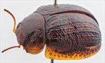
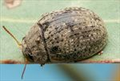
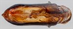
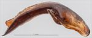
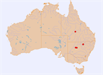

Click on images to enlarge
_SM.jpg){kind=link}

Male, Cobar, New South Wales


Female, Isisford, Queensland


Aedeagus, dorsal view (Cobar, New South Wales)


Aedeagus, lateral view (Cobar, New South Wales)


Distribution
Name
Trachymela sp. Ta232
Reference specimen
2024-054d, Cobar, New South Wales.
Adult Description
Length: ♂ 6.3–6.7 mm (n=5), ♀ 6.7–7.9 mm (n=9).
Colouration:
- Head: mid- to dark reddish-brown, with a small black macula on each side of frons extending posteriorly from just posterior to fronto-clypeal suture, rarely macula is absent and only fronto-clypeal suture may be partially black; labrum yellow-brown, mandibles brown with black tips; antennomeres 1–5 straw-brown, 7–11 slightly darker brown.
- Pronotum: brown, concolorous with head, with very variable extent of black on disc – most frequently present as black areas behind inside edge of eyes and along and just behind anterior margin, sometimes these black areas extend further onto the disc, rarely completely covering it, rarely disc has almost no black; a round darker brown or black macula is present in centre of foveal area.
- Scutellum: concolorous with or darker than adjacent area of pronotum.
- Elytra: brown, concolorous with pronotum, black ridges border the scutellum, black verrucae are quite densely distributed on the brown surface with longitudinal rows well defined, particularly VR3 and VR5 wherein verrucae join to form an almost uninterrupted longitudinal ridge, other rows have mostly small, almost round black or dark-brown verrucae that are spaced along the rows, verrucae in VR6–VR9 are more widely spaced, a mostly continuous and broader black ridge extends along the discal margin, all or some of verrucae just posterior to median depression sometimes partially joined by a transverse ridge; punctures of similar shade or fractionally darker than interstices, humeral callus black.
- Venter & Legs: mid- to dark-brown, thoracic ventrites sometimes slightly darker, inner surface of elytral epipleura brown.
- Cuticular Wax: light brown, relatively evenly to somewhat unevenly distributed over much of surface of head, pronotum and elytra, light-grey streaks present in gaps between verrucae in row VR2–VR9 and along margin of elytral disc, a small greyish patch usually present at elytral base, adjacent to scutellum.
Morphology:
- Shape: quite evenly and moderately strongly rounded (height = 48–56% BL), greatest height viewed laterally is in front of middle of elytral margin.
- Head: punctures fine to moderate-sized (pd ≈ 1.5–2.5× ef) and relatively evenly and densely distributed; antennae short (AL/BL: ♂ 32–34%, ♀ 29–30%), filiform.
- Pronotum: almost evenly curved transversely, only very slightly explanate close to lateral margin, foveal depression very shallow with an almost round elevated area in middle, discal area very slightly rugulose, often bounded laterally by a slightly raised and usually more finely punctured uneven ridge, punctures clearly impressed and quite evenly and densely distributed in discal area, size similar or slightly larger than those on head, becoming much coarser from foveal depression to lateral margins; front margins join lateral margins in a smoothly rounded right-angle, with lateral margin curving smoothly and very gradually towards rear margin.
- Scutellum: punctured, punctures similar in size or fractionally smaller than those on adjacent area of pronotum.
- Elytra: surface evenly curved transversely, lightly and evenly curved longitudinally in anterior two-thirds, then curvature increases towards apex, punctures moderate in size, relatively distinct and relatively evenly distributed on anterior half, many smooth, elevated verrucae, some with small central punctures are arranged over elytral surface in distinct longitudinal rows (see colouration above for arrangement), surface continuous under humeral callus; posterior third of marginal area slightly concave; vertical extension of epipleura considerable (HCE/PW = 0.35–0.39).
- Venter: prosternal process almost parallel-sided or narrowest in middle, closed anteriorly, short setae very sparsely distributed over prosternal process, absent from mesoventrite, a single seta on anterior and median trochanter; front edge of metaventrite beveled, rounded.
Male Genitalia (Aedeagus):
- Dimensions: moderate-sized (LPE = 30–33% BL).
- Dorsal view: sides of shaft slightly sinuate, narrowing very slightly from basal sulcus towards apex, then broadening to be widest at middle of ostium from where sides converge towards apex in a mostly smooth arc with curvature of arc increasing close to apex, dorsal surface between base and ostium lightly sclerotized resulting in poorly defined posterior edge of ostium, dorso-median channel poorly defined, ostial processes protruding towards but not reaching spatulum; tip small and smoothly triangular.
- Lateral view: shaft curved through about 145° just past basal sulcus then ventral surface quite evenly and lightly curved almost to apex, dorsal surface parallel with ventral to rear of ostium then converging evenly towards ventral surface, tip deflexed.
Immature Stages
Unknown.
Similar species
- Ta126: this species is very similar in most respects to Ta232. It differs primarily by the possession of an aedeagus with a clearly ovate ostium. The arrangement of verrucae differs between the two species, with Ta232 tending to have almost a continuous raised ridge for VR3 and VR5, while in specimens of Ta126 these rows are composed mostly of discrete verrucae. In specimens of Ta232, VR4, VR6 and VR7 (and sometimes VR8) have quite prominent white streaks of wax between the verrucae that are absent in specimens of Ta126. The inner surface of the epipleura is at least partially black in the majority of specimens of Ta126.
Notes
- Host Associations: All specimens of Ta232 have been found on Eucalyptus species in the Adnataria group, particularly E. coolabah (Symphyomyrtus: Adnataria) and E. populnea. Many individuals were found under flakes of bark on the trunks of E. intertexta trees at one location in winter.
Copyright © 2026. All rights reserved.